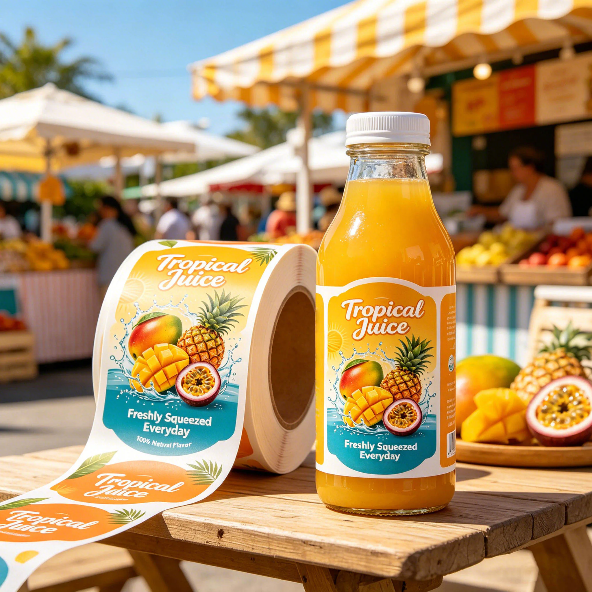

Build the evidence pack before buying a remedy
Start by identifying what is affected. Separate observations about adhesion, printed-surface damage and package deformation; a photograph may show more than one. Follow the brand's and packer's quality procedures for containment and product disposition rather than asking the label printer to make a food-safety decision from an image.
| Evidence item | Useful record | What it prevents |
|---|---|---|
| Population | SKU, label lot, bottle lot, packing job and affected quantity if known | Treating an unbounded complaint as every roll |
| Timing | First observed lift and preceding process/storage steps | Confusing initial application with later use |
| Matched samples | Identified failed and unaffected packs from comparable conditions | Comparing unrelated bottles or revisions |
| Label condition | Edge location, print damage and retained label/liner | Losing clues during removal or cleaning |
| Construction | Supplier reference, artwork, cut size and finish | Changing an unspecified object |
| Follow-up | Evidence owner, next comparison and written disposition | Treating a new material sample as a closed investigation |
Keep original photos and retain samples before destructive inspection where the operation permits it. Ask the investigating party what it needs rather than peeling every failed label off and discarding the backing or carton identity. If nobody knows when lift began, record that uncertainty. An invented timeline can direct the next trial toward the wrong question.
A hypothetical brand may find that one bottle lot shows edge lift while another, packed on the same job, does not. That observation justifies checking the container and application records; it does not prove a coating defect or absolve the label construction. Another job may show damage only after a particular handling route. Compare the relevant populations before accepting a universal stronger-glue remedy.
Agree what the next trial should distinguish and who reviews its outcome. If a candidate changes shape, face and adhesive together, describe it as a complete proposed solution rather than proof of one root cause. Preserve any accepted change in the order specification and retained reference. Small-radius comparison and glass condensation timing provide narrower routes when the evidence points to those questions.
Short answer
Bottle labels peel off when the adhesive cannot keep contact with the package surface. The most common triggers are condensation, ice bucket use, oily residue, textured or curved surfaces, applying labels to cold bottles, labels that are too large for the curve, and unprotected paper or ink.
Common reasons bottle labels peel, lift or wrinkle
| Problem | What is happening | Practical fix |
|---|---|---|
| Condensation on cold bottles | Water forms between the label and the bottle or attacks paper fibers. | Use moisture-resistant BOPP or PET film and test after refrigeration. |
| Ice bucket or cooler use | Repeated water contact weakens paper labels and some adhesives. | Review waterproof film, adhesive and finish before production. |
| Oily sauce or product residue | Oil on the jar or bottle surface reduces adhesive contact. | Clean the surface before application and consider film or laminated options. |
| Label is too wide for the curve | The label fights the bottle curve and lifts at edges. | Reduce width, split front/back labels, or adjust shape and corner radius. |
| Applied to a cold or wet package | Adhesive may not wet out properly on the surface. | Apply to clean, dry packaging at a suitable room temperature when possible. |
| Ink or paper is unprotected | Ink smears or absorbs water even if the adhesive still holds. | Use proper print method, film material, varnish or laminate by project. |
Best material directions by packaging condition
| Use condition | Better label direction | Buyer note |
|---|---|---|
| Room-temperature dry bottles | Coated paper, textured paper or BOPP | Paper can work well when the surface stays dry and the product is premium or craft-positioned. |
| Refrigerated juice or soda bottles | White BOPP, clear BOPP or PET | Ask for condensation review, especially for clear bottles and cold-chain use. |
| Wine bottles in ice buckets | Wet-strength paper, film, or laminated option by project | Premium look and wet handling both matter; do not choose by appearance only. |
| Sauce, oil or condiment jars | White BOPP, laminated paper or PET | Oily handling makes smudge and edge-lift testing important. |
| Clear bottles or cups | Clear BOPP or clear PET | Leave enough contrast for readable text and barcode scanning. |
How to test before bulk production
- Apply the label to the real bottle, jar or cup, not a substitute surface.
- Make sure the surface is clean and dry before application.
- Wait for adhesive dwell time before stress testing.
- Test refrigeration, condensation, hand wiping and normal handling.
- For wine, beer or chilled drinks, test cooler or ice bucket exposure if that is part of the actual use.
- Check edge lift, wrinkles, ink smudge, barcode scanning and whether small text remains readable.
Artwork and size choices that reduce peeling risk
Material is only one part of the answer. A label that wraps too far around a sharply curved bottle can lift even with a good adhesive. Keep the label inside the flattest usable area, use rounded corners when appropriate, avoid tiny high-contrast text over a transparent background, and confirm barcode size before printing.
For bottles with front and back panels, two smaller labels may perform better than one oversized wraparound label. For short bottles or wellness shots, a compact label with enough gap from the shoulder and base can reduce wrinkles during application.
What to send for a material recommendation
FAQ
Are waterproof labels always enough for cold bottles?
No. Waterproof face material helps, but adhesive, bottle surface, application condition and label size also matter. A waterproof label can still fail if applied to a wet or oily surface.
Should beverage labels use clear film or white film?
Clear film works when you want the bottle or liquid to show through. White film gives stronger color contrast and often makes small text easier to read. The better choice depends on artwork, bottle color and shelf lighting.
Can paper labels work on wine bottles?
Yes, paper can work for dry shelf wine packaging and premium textured looks. For ice bucket or heavy condensation use, review wet-strength paper, film, laminate and adhesive options before production.
Continue with Bottle Label Bubbles and Wrinkles: A Troubleshooting Guide for a focused troubleshooting and purchase checklist.
Continue with Wine Bottle Coatings: Why the Same Label Grips One Glass Run but Not Another for a focused purchase checklist.
Send the unresolved specification question
Include identified failed/unaffected samples, bottle and label lot references, process history, cut size and the question the next trial must answer.
Prepare a label specification inquiry. The contact form opens an email draft; review it and use the listed email or WhatsApp route for attachments. Available construction, sample scope, pricing and timing require confirmation for the actual job.